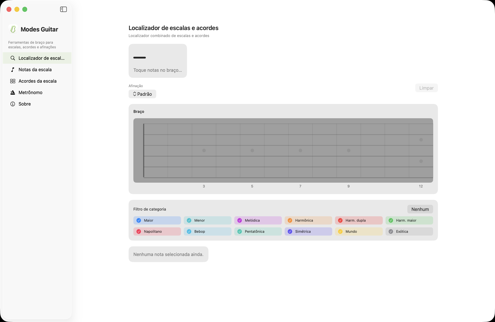
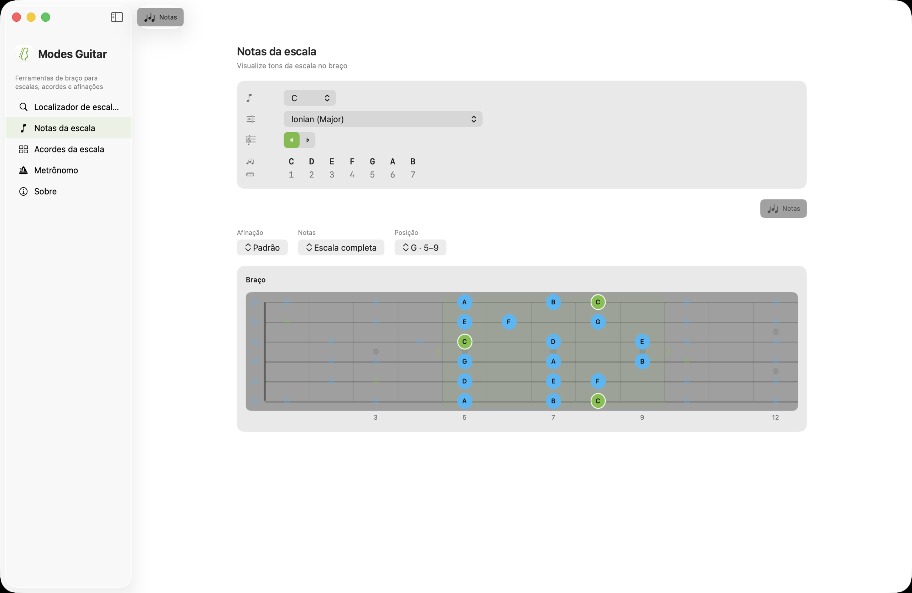
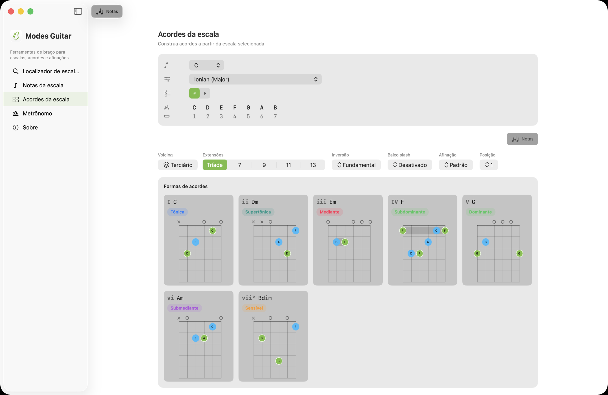
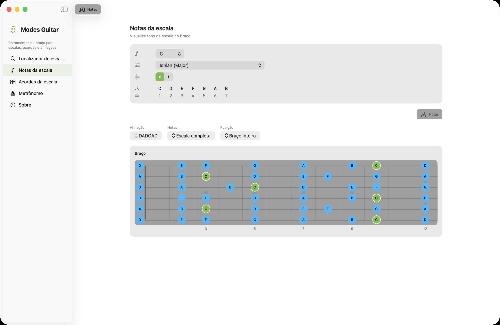
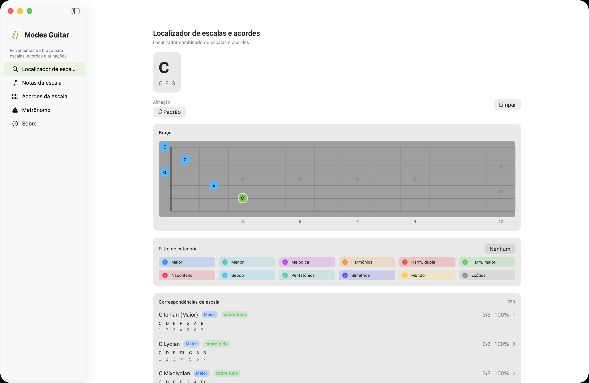
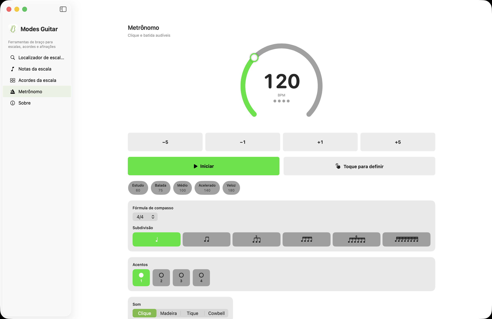
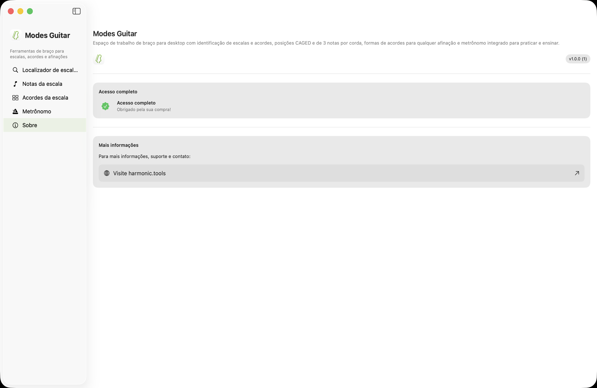

Modes Guitar para macOS
Um espaço de trabalho de braço para o Mac. Toque as notas que você está pressionando para descobrir o que está tocando, disponha qualquer escala em posições CAGED ou três notas por corda, navegue por formas de acordes tocáveis em qualquer afinação e pratique tudo com um metrônomo integrado — em um app com barra lateral que fica perfeitamente ao lado da sua DAW ou do seu plano de aula.
- Busca de Escalas e Acordes direto no braço
- Posições CAGED e três notas por corda
- Formas de acordes tocáveis em qualquer afinação
- 20 afinações, mais a sua afinação personalizada
- Metrônomo de estudo e widgets na Notification Center
Capturas de Tela
Inclui capturas em modo claro e escuro que acompanham o tema do site.








Funcionalidades
- Busca de Escalas e Acordes: Toque as notas que você está pressionando direto no braço. O Modes Guitar nomeia o acorde em tempo real — maior, menor, diminuto, aumentado, com extensões, suspenso e mais — e classifica cada escala compatível pela cobertura de notas. Filtre por família de escala para reduzir a lista e vá direto para os acordes daquela escala.
- Escalas no Braço: Escolha uma tônica e uma escala e veja cada nota da escala se acender ao longo do braço. Alterne para posições CAGED ou padrões de três notas por corda, arraste uma caixa para cima e para baixo no braço para mudar de posição e restrinja as notas para tríade, sétima, pentatônica ou a escala completa para ver a forma por trás da forma.
- Formas de Acordes: Cada grau da escala ganha formas reais e tocáveis, com marcadores de cordas soltas e abafadas, indicadores de pestana e uma régua com números de casa quando a forma fica mais acima no braço. Percorra as posições ao longo do braço, escolha uma inversão ou force qualquer nota da escala para o baixo em acordes com baixo invertido.
- 20 Afinações, Mais a Sua: Standard, Drop D, Drop C, E♭ Standard, DADGAD, Open G, Open D, sete cordas, barítono, baixo de quatro e cinco cordas, ukulele, banjo (cinco cordas, tenor e plectrum) e bandolim. Formas, pestanas e nomes das notas são recalculados para a afinação que você escolher, e a reafinação mantém seu dedilhado para que você ouça no que a mesma forma se transforma. Ou crie a sua: escolha de 3 a 8 cordas e afine cada uma de ouvido, partindo de qualquer predefinição.
- Metrônomo de Estudo: Um metrônomo completo vem junto: fórmulas de compasso, subdivisões, swing, acentos por tempo, quatro vozes de clique, volume ajustável e retorno tátil, além de andamentos rápidos e predefinições salvas para os trechos que você está treinando.
- Widgets: Mantenha o metrônomo na Notification Center e inicie ou pare sem trocar de app, e receba uma nova Escala do Dia e Acorde do Dia para trabalhar.
Projetado para Guitarristas
- Funciona inteiramente no dispositivo — sem conta, sem anúncios, sem rastreamento
- Não requer conexão com a internet
- Aparências clara e escura em todo o app
- Um app com barra lateral que fica ao lado da sua DAW ou do seu plano de aula
- Localizado em 11 idiomas
Seja você um guitarrista aprendendo modos, um baixista mapeando uma nova afinação, um professor montando exercícios ou um compositor em busca do próximo acorde, o Modes Guitar coloca todo o braço no seu Mac. Experimente grátis por 7 dias — após o período de teste, desbloqueie o acesso completo com uma compra única. Sem assinaturas.
Referência de Braço e Afinações
Uma referência completa das afinações, posições, ferramentas de acordes e recursos de metrônomo por trás do app.
Afinações
Formas, pestanas e nomes das notas são recalculados para a afinação que você escolher. A reafinação mantém seu dedilhado, para que você ouça no que a mesma forma se transforma. As notas são listadas da corda mais grave à mais aguda.
| Afinação | Notas (grave → aguda) | Cordas |
|---|---|---|
| Standard | E A D G B E | 6 |
| Drop D | D A D G B E | 6 |
| Drop C | C G C F A D | 6 |
| E♭ Standard | E♭ A♭ D♭ G♭ B♭ E♭ | 6 |
| DADGAD | D A D G A D | 6 |
| Open G | D G D G B D | 6 |
| Open D | D A D F♯ A D | 6 |
| Seven-String | B E A D G B E | 7 |
| Baritone | B E A D F♯ B | 6 |
| Bass (4-String) | E A D G | 4 |
| Bass (5-String) | B E A D G | 5 |
| Ukulele | G C E A | 4 |
| Banjo (5-String) | G D G B D | 5 |
| Banjo (Tenor) | C G D A | 4 |
| Banjo (Plectrum) | C G B D | 4 |
| Mandolin | G D A E | 4 |
Crie também a sua própria afinação: escolha de 3 a 8 cordas e afine cada uma de ouvido, partindo de qualquer predefinição.
Posições no Braço
Disponha qualquer escala ao longo do braço e mude quanto dela você vê. Arraste uma caixa para cima e para baixo no braço para mudar de posição.
Sistemas de Posição
Subconjuntos de Notas
Formas de Acordes
Cada grau da escala ganha formas reais e tocáveis na afinação atual.
- Playable grips — open- and muted-string markers, barre indicators, and a fret-number gutter when the shape sits up the neck.
- Positions — step through the shapes along the neck.
- Inversions — choose which chord tone sits in the bass.
- Slash chords — force any scale tone into the bass.
Metrônomo de Estudo
Um metrônomo completo para os trechos que você está treinando.
Widgets
Acesse o metrônomo e uma dose diária de teoria sem trocar de app.